Head Back To The Homepage!

View My CookSync Project!

View My Vibrational Earth Project!

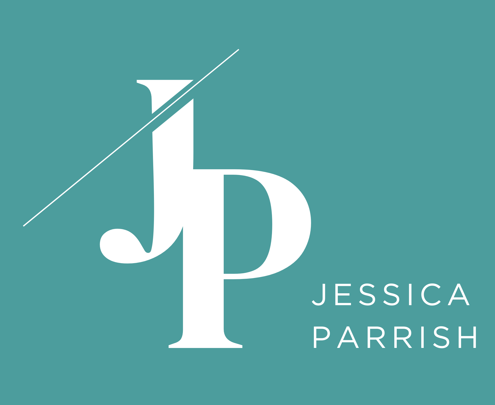
Product Design (UX/UI)
5-8 weeks
Figma, Miro
This project was completed as a part of a UX/UI Design course in the WGU Software Engineering program.
Taniti is a small, unspoiled island with a lot to offer - warm weather, natural beauty, local culture, and
a growing range of activities and accomodations for visitors. As word spreads and interest in the island
grows, Taniti finds itself at a turning point. Tourism is on the rise, and with it comes an opportunity to
shape how the world discovers and experiences the island for the first time.
But opportunity without infrastructure creates friction. As more travelers begin looking into Taniti as a
destination, they're met with a scattered and incomplete picture of what the island actually offers.
Information is hard to find, inconsistent, or buried across multiple sources - leaving potential visitors
with more questions than answers before they've even booked a flight.
Taniti deserves better than that. And so do the travelers who want to visit.
For a traveler discovering Taniti for the first time, the experience of planning a trip is uncertain at
best and discouraging at worst. Unlike established destinations with robust tourism ecosystems, Taniti
lacks a single, trustworthy source of information that tells visitors what to expect when they arrive.
What accommodations are available? What can they do on the island? How do they get around? What should
they know before they go?
Without a central hub to answer these questions, potential visitors are left piecing together information
from unreliable sources — or worse, giving up on the idea altogether and choosing a destination that's easier
to plan for. For an island actively looking to grow its tourism, this gap between interest and information is
a significant barrier.
The absence of a dedicated tourism website isn't just an inconvenience — it's costing Taniti visitors.
The solution was a fully designed tourism website for Taniti — a warm, welcoming, and informative platform that
gives travelers everything they need to plan a trip with confidence. The site serves as a one-stop destination
for island information, covering accommodations, activities, dining, transportation, and local culture all in
one place.
The design prioritizes clarity and inspiration in equal measure. Every page is built around answering the
traveler's most pressing questions while also painting a vivid picture of what makes Taniti worth visiting. Rich
photography, straightforward navigation, and honest information about what to expect on arrival work together to
bridge the gap between curiosity and commitment.
For Taniti, the website isn't just a design deliverable — it's the island's first impression.
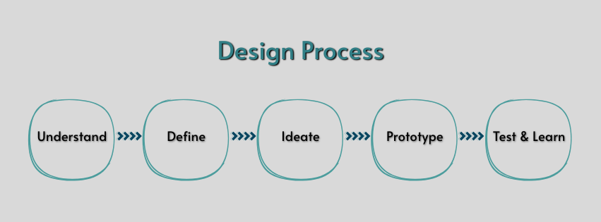
Going into this project, I was given a research brief about Taniti — a small tropical island that's starting
to see more interest from travelers but doesn't really have a strong digital presence to support that growth
yet. The brief gave me a solid foundation to work from, covering the basics of what the island has to offer
in terms of activities, lodging, transportation, and local culture. From there, my job was to put myself in
the shoes of someone who had never heard of Taniti before and figure out what they would actually need to
feel comfortable planning a trip there.
That shift in perspective — from "here's what the island has" to "here's what a traveler needs to know" — ended up being the most important thing I did in this phase.
Once I started mapping the brief's information against what a real traveler would be looking for, a pretty
clear picture started to form. Taniti has a lot going for it — there's genuinely a lot to do, a range of places
to stay, and multiple ways to get around. But none of that matters if a potential visitor can't easily find or
understand it.
I kept coming back to the same question a first-time visitor would ask: "But what is it actually like when I
get there?" And honestly, without a central place to answer that, it's really hard to know. That gap between
what Taniti offers and what travelers can actually find out about it felt like the real problem to solve.
It also became clear pretty quickly that Taniti isn't just one type of destination for one type of traveler.
Families, solo adventurers, couples, friend groups — they'd all potentially want to visit, but they'd all
be looking for very different things. That meant the design couldn't just cater to one audience, it had to
work for everyone walking through the door.
A few things really stood out to me as I worked through the research:
Transparency builds trust. Travelers heading somewhere unfamiliar don't just want the highlight reel — they
want the real information. What does lodging actually cost? How do I get around once I land? What should I
know before I go? A website that answers those questions honestly is going to earn a traveler's trust way
faster than one that's all beautiful photos and vague descriptions.
Making information hard to find is the same as not having it. If a traveler has to dig through multiple
sources just to figure out the basics, they're going to get frustrated and start looking at other
destinations. Putting everything in one place isn't just a nice-to-have — it's essential for an island
that's still building its reputation with tourists.
A good tourism website has to do two things at once. It needs to make you want to go, and it needs to make
you feel ready to go. Just inspiring people without giving them the practical details leaves them stuck.
Just giving them information without making it feel exciting undersells the destination. The sweet spot is
doing both at the same time.
Four pain points kept coming up throughout my research and ended up driving basically every design decision I made:
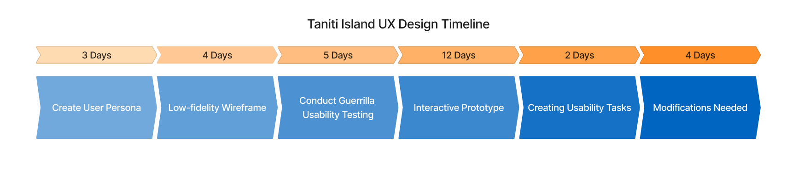
With the research phase complete, the next step was taking everything I learned and turning it into a clear picture of who I was actually designing for and what they needed from the Taniti website. The research made it pretty obvious that Taniti's audience isn't just one type of traveler — but digging into the details of the brief pointed toward a core user who kept coming up: someone experienced enough to seek out lesser-known destinations, busy enough that planning time is limited, and motivated enough by meaningful experiences to do the research when they can find the time.
Christopher Richards represents the kind of traveler Taniti is perfectly positioned to attract — someone with the means and motivation to seek out something different, but not enough time to piece together a trip from scattered or incomplete sources. He's been to Taniti before, which means the website needs to serve both first-time visitors and returning guests equally well. His frustrations around planning time and information availability directly shaped the structure and content priorities of the Taniti website.
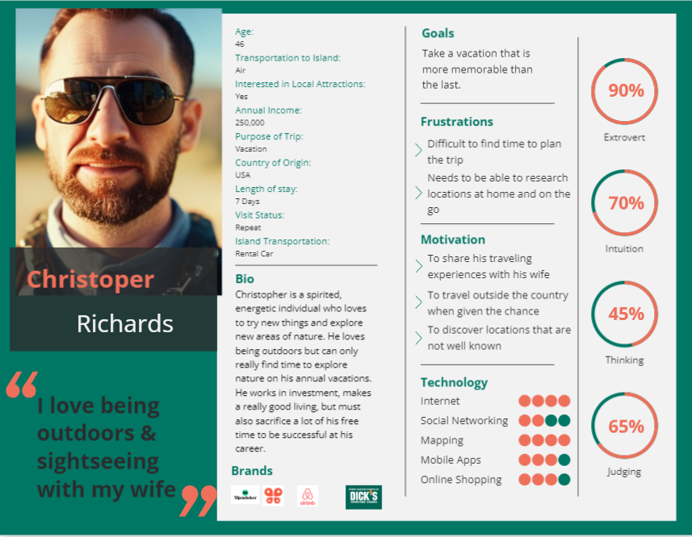
Travelers like Christopher need a reliable, all-in-one digital destination for Taniti that gives them everything they need to plan a confident, memorable trip — because right now, the information simply isn't easy enough to find, and that gap is standing between the island and the visitors it deserves.
With a clear picture of the user and the problem, the ideate phase was about figuring out the best way to structure and present everything Taniti has to offer. This stage moved from inspiration to strategy to structure before ever touching a wireframe.
Before mapping out any pages, I looked at established tropical tourism websites to understand what was working in the space. Tahiti Tourisme was a key reference — as a similar island destination with a strong digital presence, it offered a useful benchmark for how to balance stunning photography with practical travel planning information. The goal wasn't to copy the approach but to understand the conventions and find where there was room to do something more focused and transparent for Taniti.
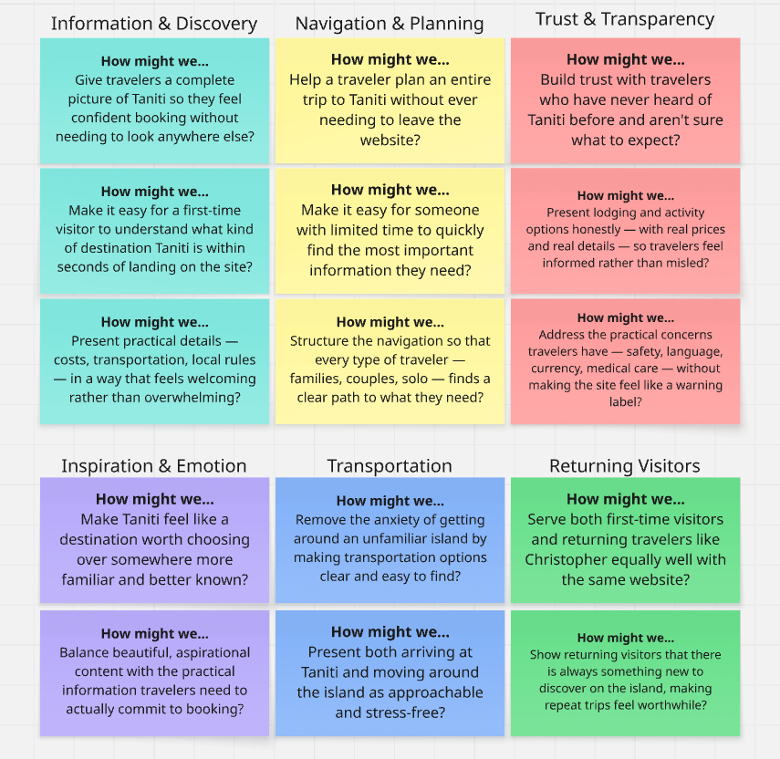
The research phase naturally led to a set of guiding questions that shaped every structural and visual decision throughout the project.
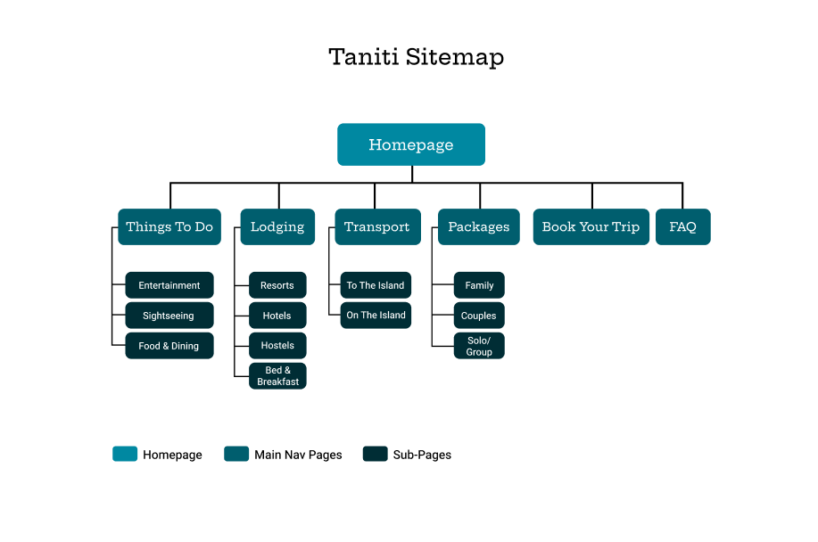
Before jumping into wireframes, a site map was created to plan out the full structure of the Taniti website. Mapping all seven pages and their relationships early made it easy to see how a traveler would move through the site and ensured nothing important was missing or buried. Key structural decisions — like giving transportation its own dedicated page and separating the FAQ from the About content — were made at this stage.
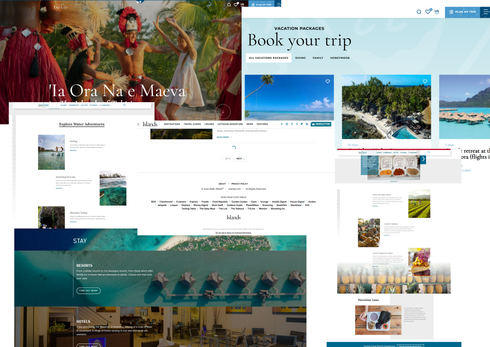
A moodboard was built to establish the visual language of the site before any design work began. References were pulled from travel photography, editorial tourism publications, and destination websites to define the tone — warm, coastal, and inviting without feeling generic. Color palette directions, typography pairings, and photography styles were all explored here before committing to a direction.
Before committing to any visual design decisions, lo-fi wireframes were created in Figma to map out the structure and layout of every page on the Taniti website. Working in grayscale at this stage was intentional — keeping color and imagery out of the picture meant every decision was purely about structure, hierarchy, and content placement rather than aesthetics.
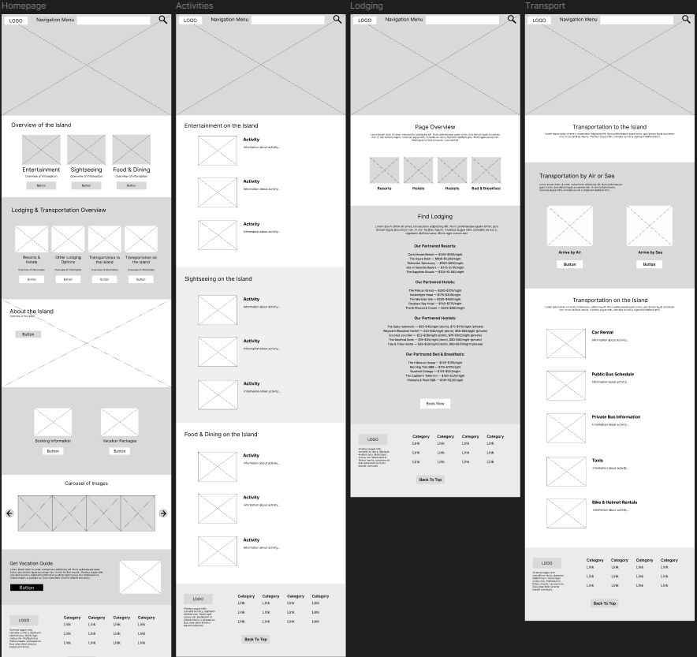
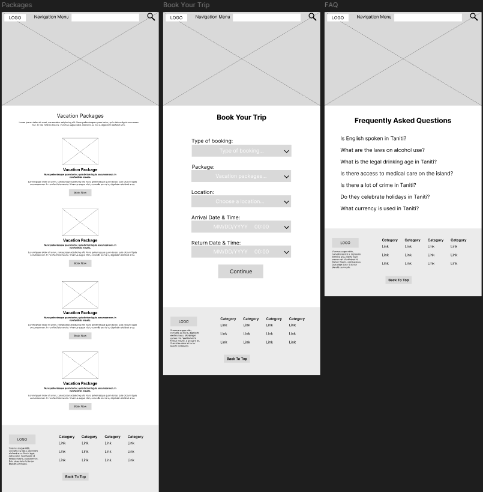
View Low Fidelity PrototypeThe wireflow shows all seven pages connected by their navigation paths, giving a clear picture of how a traveler would move through the site from first landing to booking.
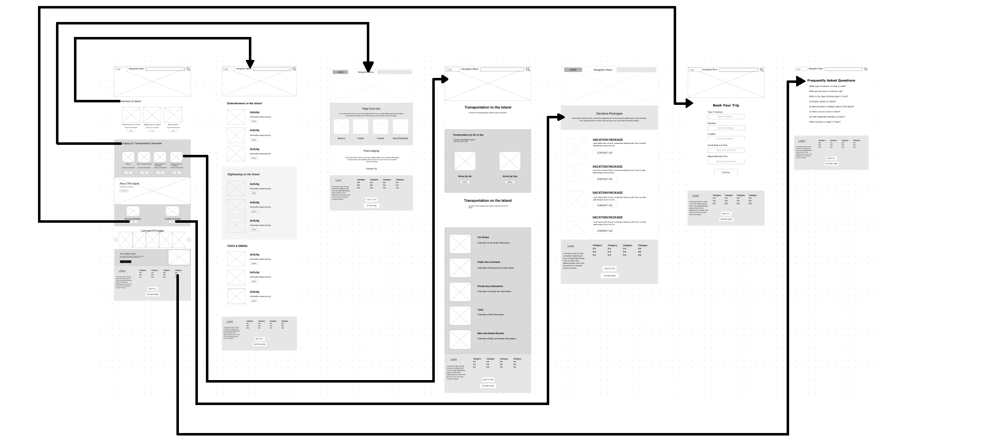
A few key structural decisions were made during this phase that carried all the way through to the final design. Transportation was given its own dedicated page early on rather than being folded into the lodging section — a decision that turned out to be validated by usability testing later. The FAQ page was planned from the start as a full content page rather than a simple accordion, recognizing that travelers heading to an unfamiliar destination would have a lot of real questions that deserved real answers. The packages page was structured around traveler types — families, couples, solo and group travelers — rather than just listing options, making it easier for visitors to quickly find what was relevant to them.
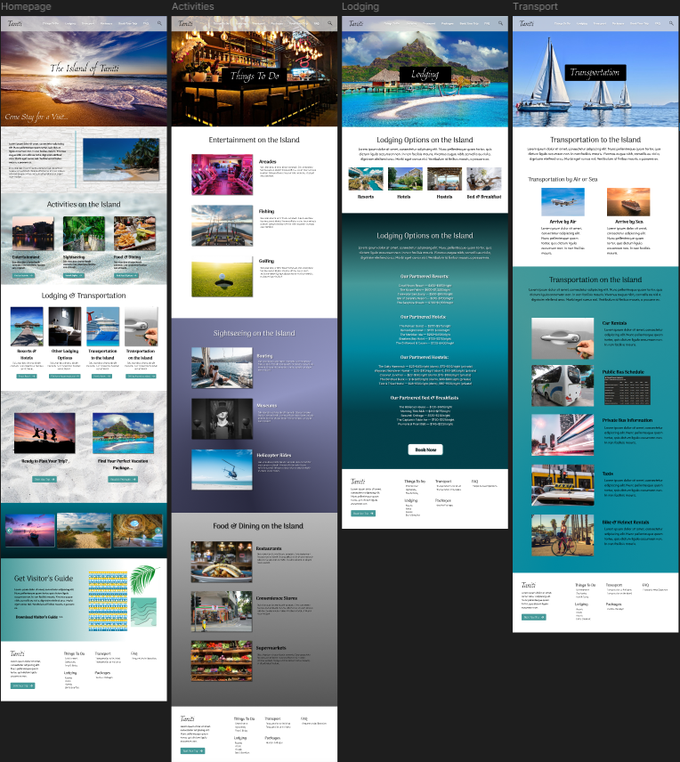
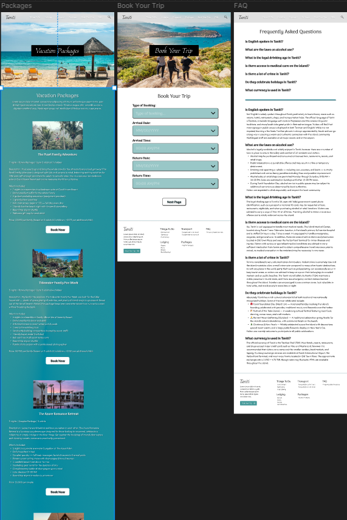
View High Fidelity PrototypeTo validate the core user flows of the Taniti website and ensure the design was actually solving the problems identified in the research phase, two rounds of guerrilla usability testing were conducted — one on the low-fidelity wireframe prototype and one on the high-fidelity prototype. Each round involved three participants completing a set of tasks designed to test key user flows and uncover any friction points in the experience.
With the lo-fi wireframes connected into a clickable prototype, a first round of guerrilla usability
testing was run with three participants to catch structural problems before any visual design work began.
Participants completed three tasks:
Participants were given three tasks to complete using the wireframe prototype:
Tasks were scored on a 3-point scale — 3 meaning completed without issue, 2 meaning completed with some difficulty, and 1 meaning the task could not be completed.
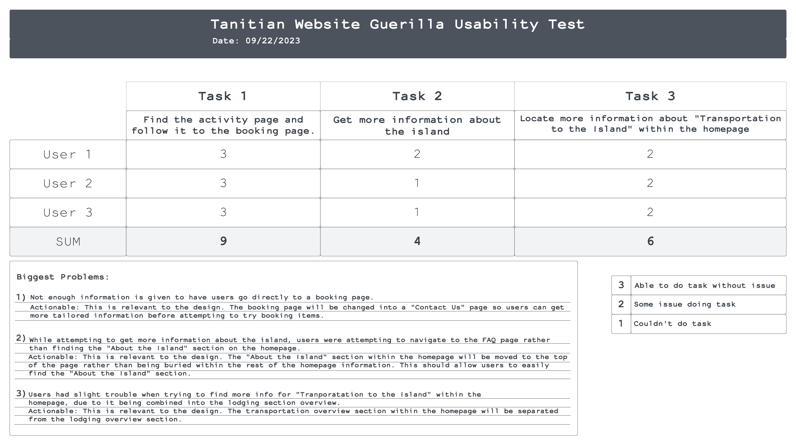
Task 1 scored a perfect 9 out of 9 — all three users completed the activity to booking flow without any
friction, which was encouraging and confirmed that the core navigation structure was working as intended
from the start.
Task 2 scored a 4 out of 9, which was the weakest result of the three. Users looking for general information
about the island were navigating to the FAQ page rather than finding the "About the Island" section on the
homepage. The section simply wasn't prominent enough in its original position to be discovered naturally.
Task 3 scored a 6 out of 9. Users had some difficulty locating transportation information on the homepage
because it was grouped together with the lodging overview section rather than standing on its own. Most
participants eventually found it but noted the grouping felt confusing.
Two changes were made directly from these findings before moving into high-fidelity design: the "About the Island" section was moved higher on the homepage and the booking page was reworked into a more guided experience. The transportation overview was not yet separated from the lodging section, this was to see if the issue would persist once images were included.
After the high-fidelity design was complete, a second round of usability testing was conducted to validate that the changes made after the first round had actually improved the experience — and to catch any new issues introduced during the visual design phase. Three participants completed three updated tasks:
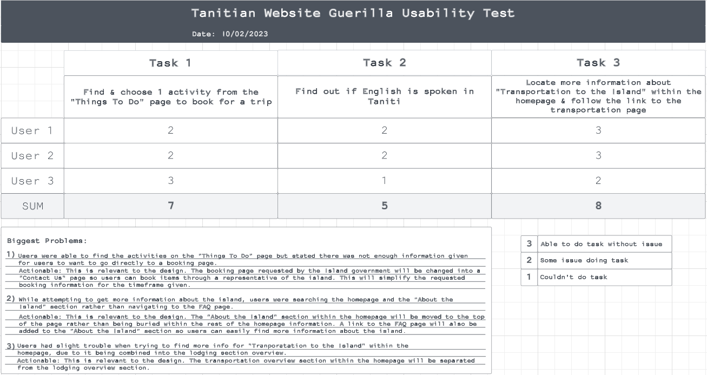
Task 1 scored a 7 out of 9 — two users completed it with some hesitation, noting that while they could find the activities page easily, there wasn't quite enough information on the activity cards to feel confident going straight to a booking page. Task 2 scored a 5 out of 9, with two users completing it successfully but one user struggling to find the FAQ page where the language information lived. Task 3 scored an 8 out of 9 — a clear improvement over the first round's 6, confirming that including images helped users find the transportation information more easily, but I still decided to separate the transportation section from the lodging section to add more clarity.
Two further actionable changes came out of the second round of testing:
The booking page was converted into a Contact Us page so users could get more tailored information from a
representative before booking — addressing the concern that there wasn't enough information for users to
commit to a booking action independently. In a real production environment, this page would have been
developed into a full booking flow with availability checking, detailed package customization, and payment
processing. Given the scope of this course project however, the Contact Us approach was the most practical
and honest decision — it still solves the user's need of taking a next step toward their trip, without
requiring backend functionality that was outside the project's scope.
A link to the FAQ page was added to the "About the Island" section on the homepage, creating a more direct
path for users looking for specific information like whether English is spoken on the island.
Running two separate rounds of usability testing — one on the wireframe and one on the finished prototype —
gave a much clearer picture of what was actually working versus what just looked like it was working.
With the structural problems identified in testing resolved and the visual direction established, the project moved into high-fidelity design in Figma. The goal was to bring the wireframe structure to life with the full visual language of Taniti — rich coastal photography, a warm teal color palette, and typography that felt like it belonged on a tropical island destination. The result is a fully realized seven-page tourism website that takes a traveler from first impression all the way through to taking the next step in their travel planning.
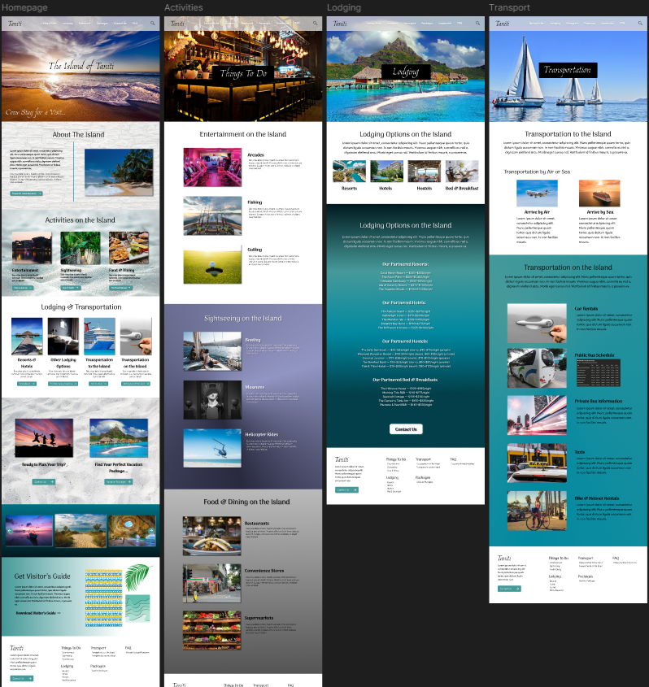
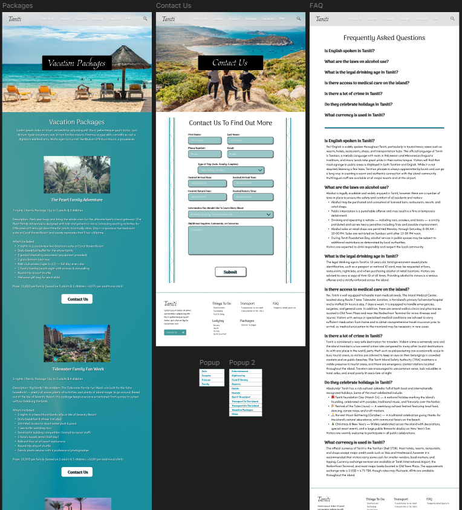
The homepage sets the emotional tone for everything that follows. A full-bleed hero image of Taniti's shoreline paired with "The Island of Taniti — Come Stay for a Visit..." makes an immediate case for the destination before a single word of copy is read. Directly below the hero sits the "About the Island" section — moved here as a direct result of the first round of usability testing — giving first-time visitors immediate context about Taniti before they dive into planning. The rest of the page flows through Activities on the Island, Lodging & Transportation, calls to action for booking and vacation packages, a photo carousel, and a downloadable Visitor's Guide — giving every type of traveler a natural path forward regardless of where they are in the planning process.
The activities page is organized into three visually distinct sections — Entertainment, Sightseeing, and Food & Dining — each with its own photography and layout treatment. Entertainment covers arcades, fishing, and golfing. Sightseeing covers boating, museums, and helicopter rides. Food & Dining covers restaurants, convenience stores, and supermarkets. The card-based layout lets the photography do the selling — a traveler can scan the page and immediately get a sense of the variety and energy of what Taniti has to offer without reading a single description.
The transport page was one of the most important pages to get right because getting around an unfamiliar island is one of the biggest sources of pre-trip anxiety for travelers. The page covers everything in one place — arriving by air or sea, car rentals, the public bus schedule, private buses, taxis, and bike and helmet rentals. Each option has its own section with supporting photography, making a practical page feel visually engaging rather than like a dry reference document. A traveler who reads this page should feel completely prepared for navigating Taniti from the moment they land.
The vacation packages page presents four curated experiences — The Pearl Family Adventure, Tidewater Family Fun Week, and additional packages for couples and solo travelers — each with a full description, inclusions list, pricing, and a Contact Us button. Rather than a traditional booking flow, the Contact Us page gives travelers a detailed form to submit their trip preferences — type of booking, arrival and return dates and times, and any additional questions or comments — so a representative can follow up with personalized information. In a real production environment this would be developed into a full booking system with live availability checking and payment processing, but for the scope of this project the Contact Us approach solves the user's core need of taking a meaningful next step toward their trip.
The FAQ page is one of the most trust-building pages on the entire site. Seven questions cover exactly what a first-time visitor to an unfamiliar destination would want to know — whether English is spoken, alcohol laws, the legal drinking age, access to medical care, crime levels, local holidays, and currency. Each question has a thorough, honest answer that treats the traveler as an adult who deserves real information rather than vague reassurances. This page directly addresses one of the core insights from the research phase — that transparency builds trust, and trust is what converts a curious browser into a confident booker.
View Final DesignThe Taniti project was a genuinely different challenge from anything I'd worked on before. This was my first experience with UX/UI design as it was the first course at WGU focused on that discipline. While it wasn't the most visually appealing, it did teach me a lot about the importance of structure and content in design. That a beautiful website isn't worth much if it doesn't actually give users what they need to make decisions and take action. It also reinforced the value of user testing, that no matter how much research you do or how clear you think your design is, there's always going to be something you missed that real users will catch.
The two-round usability testing approach was probably the best decision I made on this project. Testing on the wireframe first meant I was catching structural problems when they were still cheap and easy to fix — moving a section up the page or separating two content blocks takes minutes at the wireframe stage and hours at the hi-fi stage.
The activity cards on the Things To Do page didn't give users quite enough information to feel confident
jumping straight to a booking action, something that only became clear in the second round of testing.
If I were iterating on this project, I'd add more detail to each activity card: estimated duration,
pricing range, and a clearer indication of what the booking process actually looks like, so users have
everything they need to make a decision without having to click into a separate page first.
I'd also invest more time in the booking flow. Converting it to a Contact Us page was the right call for
a course project, and I stand by that decision given the constraints. But in a real-world version of
this product, a full booking experience with availability checking, package customization, and a
transparent payment flow would make the difference between a site that inspires travelers and one that
actually converts them.
This project reinforced something I think gets overlooked a lot in design, that transparency is a design
feature. The FAQ page, the detailed lodging pricing, the honest transportation breakdown, these weren't
just content decisions, they were trust decisions. A traveler who reads the Taniti FAQ and comes away
knowing exactly what currency is used, whether they'll need a translation app, and where the nearest
medical center is, is a traveler who feels safe enough to book. Designing for trust is just as important
as designing for beauty, and on this project the two had to work together on every single page.
It also taught me the value of constraints. The course project scope pushed me toward practical,
user-centered solutions. Like the Contact Us page, that I might have bypassed in favor of something
more technically impressive if I'd had unlimited time. Sometimes the right design decision is the one
that actually gets made.
I'm always open to new opportunities and collaborations. Feel free to reach out!